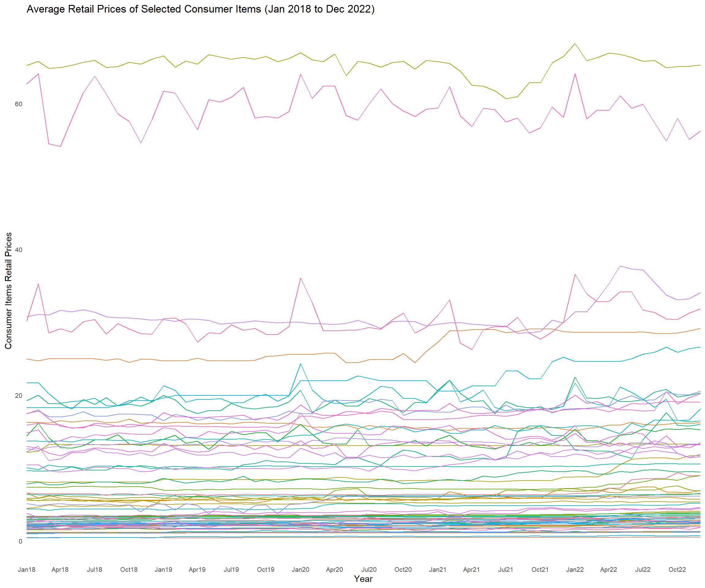
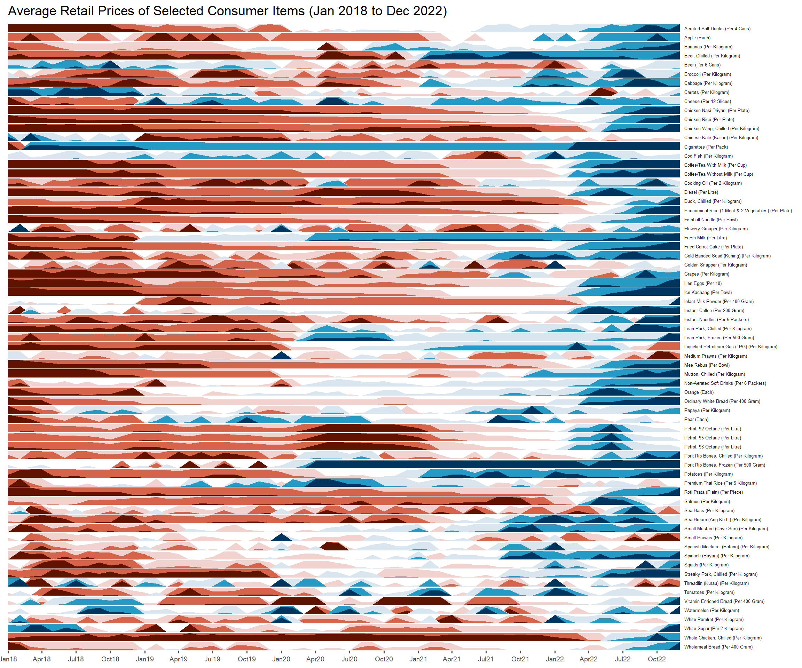

Show code
pacman::p_load(ggHoriPlot, ggthemes, tidyverse, RColorBrewer)Teo Suan Ern
January 24, 2024
February 24, 2024
The code chunk used is as follows:
This in-class exercise uses dataset - Average Retail Prices Of Selected Consumer Items.
Use the code chunk below to import the AVERP.csv file into R environment.
Code chunk below plots classic line graph. This type of graph has its limitations in visualising large time-series data.
averp %>%
filter(Date >= "2018-01-01") %>%
ggplot() +
geom_line(aes(x=Date,
y=Values, color=`Consumer Items`)) +
labs(x="Year", y="Consumer Items Retail Prices",
title = 'Average Retail Prices of Selected Consumer Items (Jan 2018 to Dec 2022)') +
theme_minimal() +
theme(panel.spacing.y=unit(0, "lines"), strip.text.y = element_text(
size = 5, angle = 0, hjust = 0),
legend.position = 'none',
panel.grid = element_blank(),
axis.text.x = element_text(size = 8),
axis.text.y = element_text(size = 8),
axis.ticks.y = element_blank(),
panel.border = element_blank()
) +
scale_x_date(expand=c(0,0), date_breaks = "3 month", date_labels = "%b%y")
An alternative method will be to plot a horizon graph.
Code chunk below plots horizon graph. This type of graph is suitable for massive time-series data.
averp %>%
filter(Date >= "2018-01-01") %>%
ggplot() +
geom_horizon(aes(x = Date, y=Values),
origin = "midpoint",
horizonscale = 6)+
facet_grid(`Consumer Items`~.) +
theme_few() +
scale_fill_hcl(palette = 'RdBu') +
theme(panel.spacing.y=unit(0, "lines"), strip.text.y = element_text(
size = 5, angle = 0, hjust = 0),
legend.position = 'none',
axis.text.y = element_blank(),
axis.text.x = element_text(size=7),
axis.title.y = element_blank(),
axis.title.x = element_blank(),
axis.ticks.y = element_blank(),
panel.border = element_blank()
) +
scale_x_date(expand=c(0,0), date_breaks = "3 month", date_labels = "%b%y") +
ggtitle('Average Retail Prices of Selected Consumer Items (Jan 2018 to Dec 2022)')